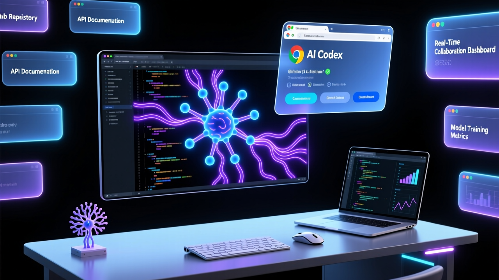

AI 程式碼助理進軍瀏覽器：測試網頁應用、跨分頁收集上下文、使用 Chrome DevTools

OpenAI 推出 Codex 的 Chrome 擴充功能，讓 AI 程式碼助理可在瀏覽器環境中測試網頁應用、跨分頁收集上下文、同時使用 Chrome 開發者工具。此插件目標是吸引程式設計師以外的更多專業用戶。
直接在瀏覽器中運行和測試 Web 應用程式，無需切換到獨立的開發環境。
從多個打開的分頁中自動獲取相關資訊，幫助 Codex 更好理解開發者的需求。
同時操作 Chrome 開發者工具而不影響用戶的正常瀏覽體驗。
自動整理測試結果，保持工作流程井然有序，不會接管整個瀏覽器。
「許多計算任務都在瀏覽器中進行，因此非技術背景的專業人士也能從 Codex 中受益。」
— OpenAI 策略目標OpenAI 的策略是將 Codex 從純粹的開發者工具轉變為更廣泛的專業人士助手。目標羣體包括：
「我們看到編碼成為 AI 工具的主要應用領域之一。公司正在繼續擴展其在這一領域的產品。」